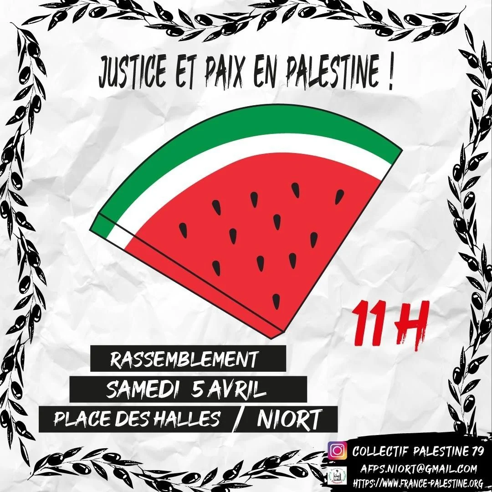

Appel archivé
« Justice et paix en Palestine ! » Appel du 5 avril à Niort
Date indiquée par Facebook · 3 avril 2025
Repères éditoriaux
Nous avons relayé l’appel du Collectif Palestine 79 à se rassembler le samedi 5 avril 2025 à 11 h, place des Halles à Niort. Le visuel fait de la pastèque le symbole de cet appel à la justice et à la paix.

Sources
Archive rouge · document diffusé sur Facebook · AR-0002-FB-01152
À lire aussi · Palestine. Appel au rassemblement du 26 avril place des Halles à Niort